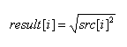
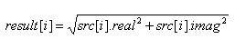

DSP_ABS_VEC
This API is for computing the absolute values of the elements in an array.
For not-complex data processing:

For complex data processing:

This API is defined in the header file /opt/hp93000/soc/prod_com/include/MAPI/libdsp.h.
Syntax
DSP_ABS_VEC(ARRAY_D& src, ARRAY_D& result); DSP_ABS_VEC(DOUBLE *src, DOUBLE *result, INT size); DSP_ABS_VEC(ARRAY_COMPLEX& src, ARRAY_D& result); DSP_ABS_VEC(COMPLEX *src, DOUBLE *result, INT size);
I/O |
Parameter |
Description / Range |
|---|---|---|
I |
src |
Source array |
O |
result |
Computed results |
I |
size |
Number of elements to be processed 1 ≤ size ≤ 2097152 size ≤ (size of src) size ≤ (size of result) |
Example
COMPLEX array1[1024];
DOUBLE abs_array[1024];
.
.
DSP_ABS_VEC(array1, abs_array, 1024);DSP_ABS_VEC
computes the absolute value of elements in COMPLEX array array1, and returns
the results to the corresponding 1024 elements of double array
abs_array.